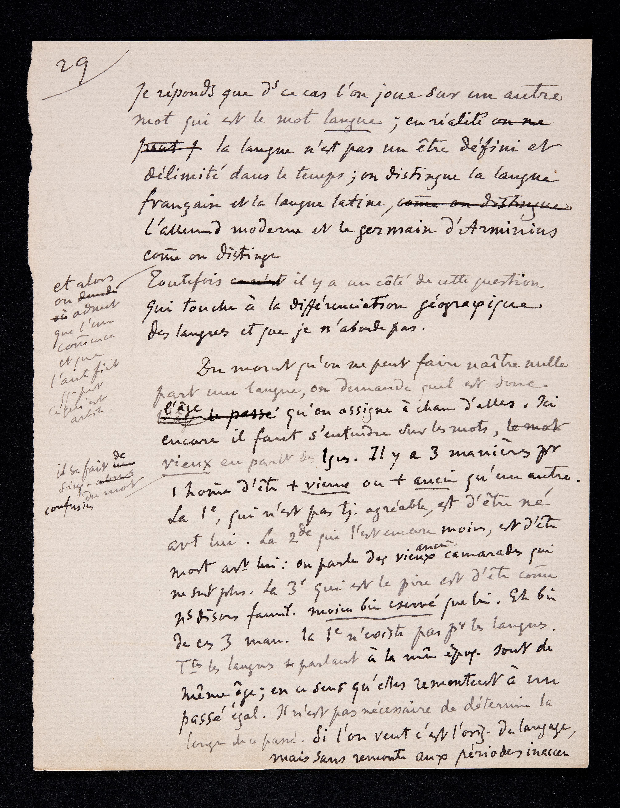
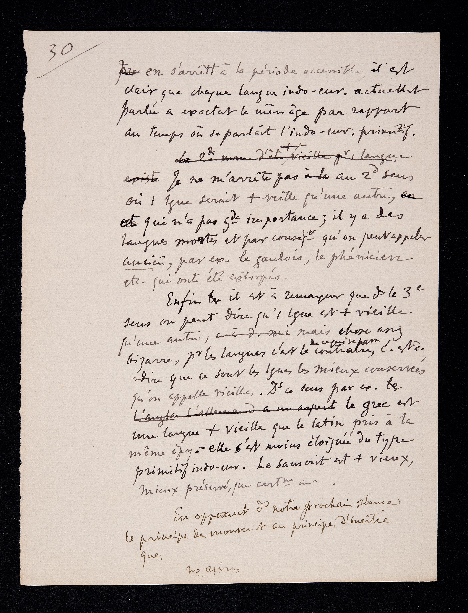

BGE Ms. fr. 3951/1.1-3, pagine 29-30: versione digitale
Informazioni sul manoscritto originale
Titolo: Trois premières conférences à l'Université (cours d'ouverture, novembre 1891) Scritto da:
Ferdinand
de Saussure
Contenuto: Le pagine sono gli appunti di Ferdinand de Saussurre scritti per le prime tre lezioni
del corso "Phonetique du grec et du latin" tenutesi all'Università di Ginevra. Composizione: 30 + 15 + 22 pagine + 1 foglietto Aspetto: Il numero delle pagine è collocato in alto a sinistra, delimitato da una riga obliqua. Le pagine non presentano alcun tipo di danneggiamento (es. macchie, strappi). Sono
invece presenti varie cancellature e aggiunte.
Informazioni sull'edizione digitale
Titolo: BGE Ms. fr. 3951/1.1-3, pagine 29-30: versione digitale Codificato da: Conversione TEI P5 a cura di Veronica Pistolesi e Valentina Galli Pagine codificate: pp. 29-30
passa il cursore sull'immagine per vedere la pericope corrispondente sul testo

Je réponds que dsdans ce cas l'on joue sur un autre
mot qui est le mot langue ;
en réalité la langue n'est pas un être défini et
délimité dans le temps ;
on distingue la langue
française et la langue latine,
l'allemand moderne et le germain d'Arminius
comme on distingue et alors on admet que l'un comencecommence et que l'autre finit qqequelque part ce qui est arbitr.arbitraire¹
Toutefois il y a un côté de cette question
qui touche à la différenciation géographique
des langues et que je n'aborde pas.
Du moment qu'on ne peut faire naître nulle
part une langue, on demande quel est donc
l'âge qu'on assigne à chacune d'elles.
Ici
encore il faut s'entendre sur les mots,
il se fait de sing.singulières confusions du mot
vieux en parlant des lgeslangues.
Il y a 3trois manières pour
1unhomehomme d'être +plus vieux ou +plus ancien² qu'un autre.
La 1epremière, qui n'est pas tj.toujours agréable, est d'être né
avtavant lui.
La 2deseconde, qui l'est encore moins, est d'être
mort avtavant lui : on parle des vieux anciens camarades qui
ne sont plus.
La 3etroisième, qui est la pire, est d'être comecomme nsnous disons famil.familièrement moins bien conservé que lui.
Eh bien,
de ces 3 man.trois manières, la 1epremière n'existe pas prpour les langues.
TtsToutes les langues se parlant à la mêmeépoq.époque sont de
même âge; en ce sens qu'elles remontent à un
passé égal.
Il n'est pas nécessaire de déterminer la
longueur de ce passé. Si l'on veut, c'est l'orig.origine Du langage,
mais sans remonter aux périodes inacces.inaccessibles.
Rispondo che in questo caso invece si gioca su un’altra parola, che è la parola lingua;
in realtà la lingua non è affatto un essere delimitato e definito nel tempo;
si distinguono la lingua francese e la lingua latina, il tedesco moderno e il germanico
di Arminio come si distingue [ ] e allora si ammette che l’uno comincia e che l’altro
finisce da qualche parte, il che è arbitrario.
Tuttavia c’è un aspetto di tale questione che riguarda la differenziazione geografica
delle lingue, e che io non affronto ora.
Dal momento che non si può fare nascere una lingua da nessuna parte, ci chiediamo
qual è dunque l’età che si assegna a ciascuna di esse.
Qui, ancora una volta, bisogna intendersi sulle parole. Si fanno confusioni singolari
sulla parola vecchio parlando delle lingue.
Ci sono tre maniere per un uomo di essere più vecchio o più anziano di un altro.
La prima, che non è sempre piacevole, è d’essere nato prima di lui.
La seconda, ancora meno piacevole, è d’essere morto prima di lui: stiamo parlando
dei vecchi compagni che non ci sono più.
La terza, che è la peggiore, è d’essere – come diciamo familiarmente – peggio conservato
di lui.
Ebbene, di queste tre maniere la prima non esiste per le lingue. Tutte le lingue che
si parlano a una stessa epoca hanno la stessa età; nel senso che esse risalgono a
un uguale passato.
Non è necessario determinare la lunghezza di tale passato. Se vogliamo, è l’origine
del linguaggio, ma senza risalire a periodi inaccessibili.

en s'arrêtant à la période accessible, il est
clair que chaque langue indo-eur.indo-européenne actuellement
parlée a exactement le même âge par rapport
au temps où se parlait l'indo-eur.indo-européen³ primitif.
Je ne m'arrête pas au 2dsecond sens
où 1une langue serait +plusveillevieille qu'une autre,
et qui n'a pas gdegrande importance ; il y a des
langues mortes et par conseqtconséquent qu'on peut appeler
ancienanciennes, par ex.exemple le gaulois, le phénicien,
etc.et cetera qui ont été extirpés.
Enfin il est à remarquer que dsdans le 3etroisième
sens on peut dire qu'1une langue est +plus vieille
qu'une autre, mais chose assez
bizarre, prpour les langues c'est le contraire de ce qui se passe, c'est-à- dire que ce sont les langues les mieux conservées
qu'on appelle vieilles.
DsDans ce sens, par ex.exemple, le grec est
une langue +plus vieille que le latin pris à la
même époq.époque - elle s'est moins éloignée du type
primitif indo-eur.indo-européen. Le sanscrit est +plus vieux,
mieux préservé, que certaines autres.
En opposant dsdans notre prochaine séance
le principe de mouvement au principe d'inertie⁴
que
nsnous aurons
Fermandosi al periodo accessibile, è chiaro che ogni lingua indoeuropea parlata attualmente
ha esattamente la stessa età in rapporto al tempo in cui si parlava l’indoeuropeo.
Non mi soffermo sul secondo senso in cui una lingua sarebbe più vecchia di un’altra,
che non ha grande importanza; vi sono lingue morte e che di conseguenza si possono
chiamare antiche, per esempio il gallo, il fenicio, ecc., che sono state estirpate.
Infine bisogna notare che nel terzo senso si può dire che una lingua è più vecchia
di un’altra ma, cosa assai bizzarra, per le lingue accade il contrario: sono le lingue
meglio conservate che vengono chiamate vecchie.
In questo senso, per esempio, il greco è una lingua più vecchia del latino preso alla
stessa epoca, si è allontanata meno dal tipo primitivo dell’indoeuropeo. Il sanscrito
è più vecchio, meglio preservato, di certe altre lingue.
Nella nostra prossima seduta, opponendo il principio di movimento al principio di
inerzia che [ ] avremo [ ].
Arbitraire: Qui 'arbitrario' è nel senso banale, ma ha in nuce un po' del senso 'tecnico', in
quanto in fondo il parlante e il linguista compiono la medesima operazione di delimitazione
arbitraria – ma il linguista, per mestiere, sarebbe tenuto ad essere cosciente dell'arbitrarietà
di tali distinzioni.
Ancien: Qui una qualche difficoltà per chi traduce è data dal fatto che gli elementi della
serie quasi-sinonimica francese vieux, ancien, agé (e proprio questo termine – il
primo che ci si aspetterebbe parlando di età – è assente, non a caso, nel testo francese
di Saussure) non si ripartiscono il campo in maniera analoga a quelli della serie
quasi-sinonimica italiana vecchio, anziano, antico. Il lettore dovrà dunque riportare
su ancien almeno un po' della connotazione "antico".
Indo-européenne: Viene ribadita quasi alla nausea l'idea di una continuità ininterrotta del parler,
tale che in essa ogni taglio che si voglia operare ha la stessa ragion d'essere (cioè:
nessuna). Qui Saussure affronta il problema dell'origine del linguaggio, per metterlo
da parte.
Inertie: Si tratta, rispettivamente, dell'immutabilità e della mutabilità del segno che formano
l'oggetto del capitolo del CLG [...]. Assumendo come punto di vista la dimensione
diatopica, i due principi corrisponderebbero rispettivamente alla force d'intercourse
e all'esprit de clocher di cui si parla nel capitolo del CLG dedicato alla linguistica
geografica.
Mot: Unité complexe mentale et physiologique de la langue ; membre de la phrase, unité
centrale, la plus fortement délimitée qui soit ; fondée sur la valeur et sur l’identité
par la valeur ; l'unité d’un mot ne vaut, à tout moment, que par opposition aux autres
unités semblables ; chaque mot est l'intersection du point de vue diachronique et
synchronique (Engler, 35) (Godel, 269)
Langue: instrument sémiologique permettant au langage de se manifester dans la parole ; code
social organisant le langage et formant l’outil nécessaire à l’exercice de la faculté
du langage, (Engler, 31) ; ensemble des conventions nécessaires adoptées par le corps
social pour permettre l'usage de la faculté du langage chez les individus. Institution
unique en son genre, par les caractères qui font qu'elle est solidaire du passé. La
langue est un système de signaux, de signes. Système de signes reposant sur des images
acoustiques, où les deux parties du signe sont psychiques. Sommes des signes évocables.
Système de valeurs. (Godel, 266)
Temps: Moment, époque occupant une place déterminée dans la suite des événements ou caractérisée
par quelque chose
Distinguer: Reconnaître, différencier quelque chose ou quelqu'un en percevant les caractéristiques
qui font sa spécificité
Arbitraire: Conventionnel, libre (Engler, 13). Qualifie proprement, l'association du signifié
et du signifiant, donc le signe ( ) ;(Godel, 254)
Différenciation: Action de différencier des êtres ou des choses ou fait pour des choses ou des êtres
de se différencier
Géographique: Relatif à la géographie
Parler: Dire quelque chose à quelqu'un, lui exprimer sa pensée au sujet de quelque chose ou
de quelqu'un, faire un discours portant sur tel point
Époque: Point du temps, opposé à période (espace de temps). Cf. époque des Antonins : « on
se permet d'employer le mot opposé (époque) comme synonyme (de période) parce que
l'ensemble des caractères n'a pas changé pendant ce temps » 1680 ; d'où : époque de
langue = état (Engler, 22)
Langage: Système particulier de symboles indépendants ; langue (Engler, 30) ; langue et langage
ne sont qu'une même chose ; l'un est la généralisation de l'autre (Godel, 266 ; N1.1)
Indo-européen: N.m. Langue non directement attestée mais reconstituée par comparaison des diverses
langues à l'origine desquelles elle se trouve. Adj. Se dit des langues issues de l'indo-européen.
Sens: Signification telle qu'elle est représentée par le signifié mais qui dépend en dernière
analyse d'un rapport de valeurs entre termes ; voir signification (Engler, 45) (Godel,
276)
Mouvement: Déplacement d'un corps, changement de position dans l'espace
Inertie: Propriété de la matière qui fait que les corps ne peuvent d'eux-mêmes modifier leur
état de mouvement.
Persone nominate nel testo
Arminius: né en 18 av. J.-C. en
Weser
Germanie
mort en 19 apr. J.-C en
Germanie